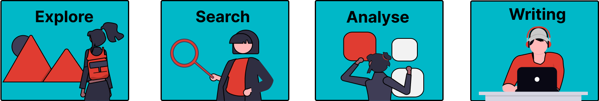

Introduction#
Welcome to this Jupyter Book on generative AI for literature reviews. The goal of this book is to provide you with foundational knowledge about GenAI tools and how you can use them to support you when conducting a literature review. This book will be used in courses offered at TU Delft (for BSc and MSc students as well as PhD candidates), but it can also be used for self-study.
This book is a pilot version still under development.
If you have consulted this book, please provide us with your feedback to help us refine the resource by filling out our evaluation form.
Structure of the Book#
This book serves as a reference guide for all the steps in the literature review. In part 1 of the guide, you can learn more about the fundamentals of GenAI and prompt engineering. Part 2 of the guide will take you through all the steps you need to take when performing a literature review. The book can be read in its entirety, but you can also select the sections that are relevant to you.
If you don’t have that much knowledge about AI yet, we recommend that you first read the basics about AI in the What is GenAI section. If you have a general understanding, start with the Introduction to AI Tools for Literature Review before heading to the specific sections. It will help you understand how the different types of tools work and how they can be applied effectively.
For each phase of the literature review, we have included a short recap on the standard way of conducting a literature review, to connect to your pre-existing knowledge. Following this you will find examples on how AI can support the literature review, and what types of tools are helpful. We believe that AI is a tool that can augment the research process, but basic (‘traditional’) skills during the literature review process take a central place and cannot be skipped.

You can easily navigate through the resource via the menu at the left. When you are in a specific section, you can navigate via the headings in the top right corner.
About the Tools Mentioned in this Book#
Not all tools mentioned in this book are acquired by TU Delft. Often you can use the free versions of tools to do a couple of the prompts recommended in the book, but for more extensive or more elaborate prompting you often need to buy a license.
As of the date of writing this book TU Delft has a license for Microsoft Copilot Chat. For the most up to date guidelines on how to use AI within the context of TU Delft, you can look at the intranet page on AI at TU Delft.
Colophon#
Acknowledgements#
The authors thank all the reviewers and betatesters of the initial version of this book.
Sources#
The sources that were used for this book are referenced at the end of each section.
Images#
Unless otherwise specified the images used on these pages are adapted from unDraw, licensed open-source by Katerina Limpitsouni.
Disclosure of AI Use#
While creating this book, we used AI for:
Editing draft texts
Setting up Jupyter Book based on structure provided
Suggesting and structuring guided activities
Model used:
OpenAI. (2025). ChatGPT (paid version July 14, 2025 - 4 September 2025) [Large language model]. https://chat.openai.com/chat
Microsoft. (2025). Copilot (August 2025 version) [Large language model]. https://copilot.microsoft.com
Last Updated#
Please be aware that the tools and approaches discussed in this guide are subject to change due to the quickly evolving nature of AI. This edition of the book was launched on September 4, 2025.